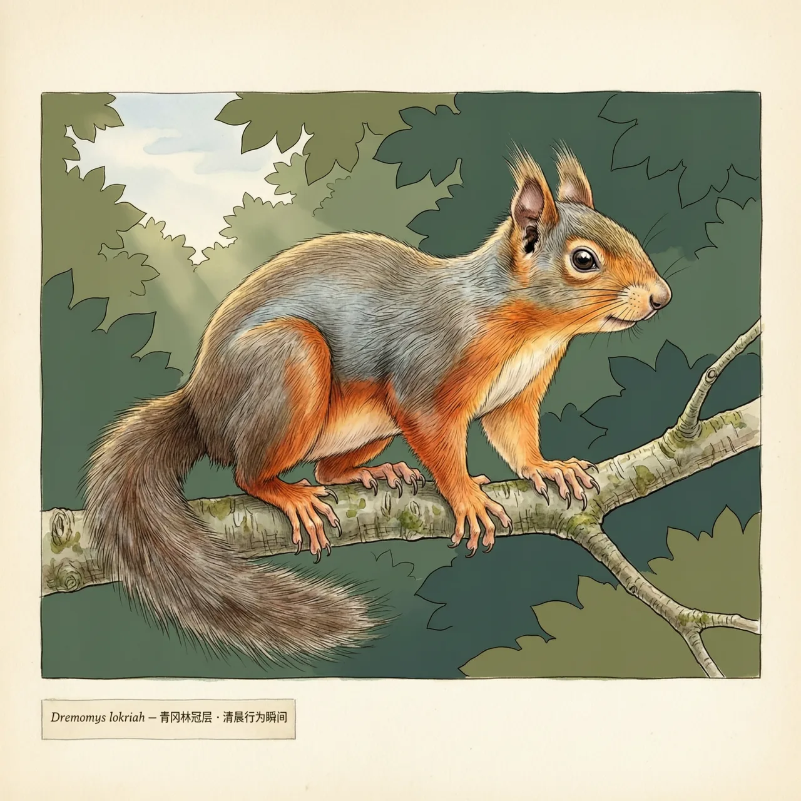
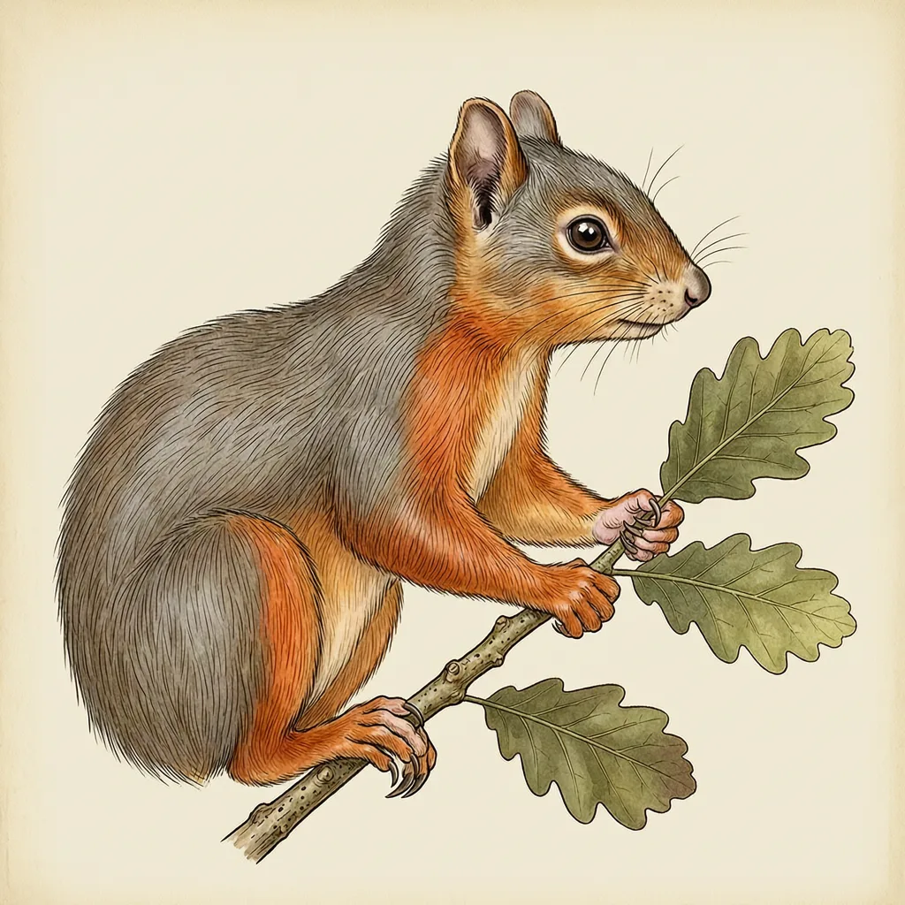

橙腹长吻松鼠生活在喜马拉雅山一带的森林，见于尼泊尔、印度、缅甸和中国西藏。它主要栖息在海拔1500至3400米的青冈林，也出现在1100米以上的亚热带森林。它吻部细窄、腹部橙红，在林冠层取食球果与嫩芽；IUCN评为无危。
海拔1100米的谷地还带着亚热带的暖意，到1500米以上，山坡换成青冈林，这条林带可以一直铺到3400米。橙腹长吻松鼠占据的正是这条带子：尼泊尔、印度、缅甸，一直到中国西藏，它的模式产地就在尼泊尔。树冠连着树冠，是它在林间活动的前提。
橙腹长吻松鼠的觅食几乎都在树冠层完成：啃球果，吃嫩芽，秋天把食物分头藏进林子，冬季靠这些储粮撑过去，那段时间树上能吃的东西少得多。它的吻部细窄，腹部橙红，移动时从一株树滑跃向下一株，很少落到地面。对一只不上地的松鼠来说，藏没藏下食物，决定它能不能熬过冬天。
听到喜马拉雅，容易默认它是耐寒的高山动物。橙腹长吻松鼠的分布下界却探到海拔1100米以上的亚热带森林：山腰的青冈林是主舞台，更暖更低的山谷林里它也待得住。上限3400米、下限1100米，一个种走完了通常需要两个物种才分得开的两条林带。IUCN把它评为无危。
